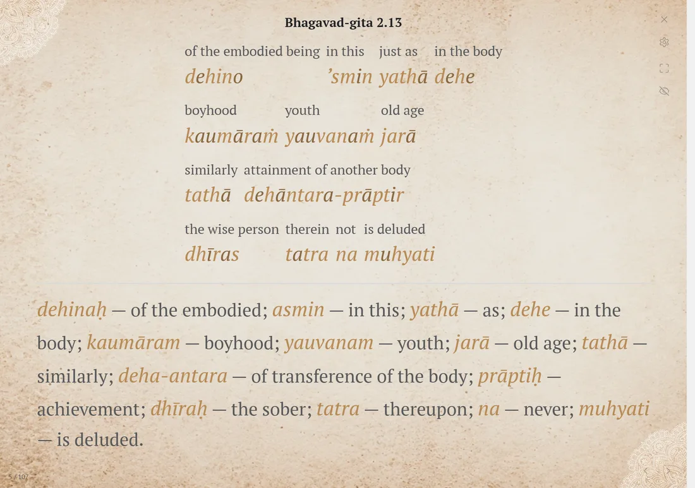
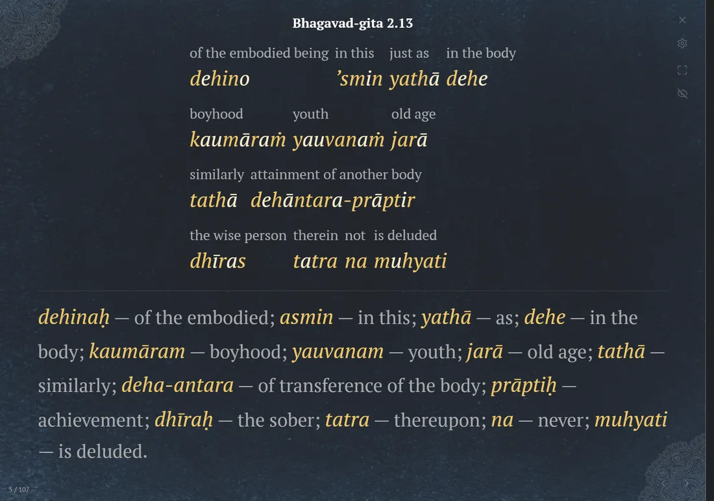
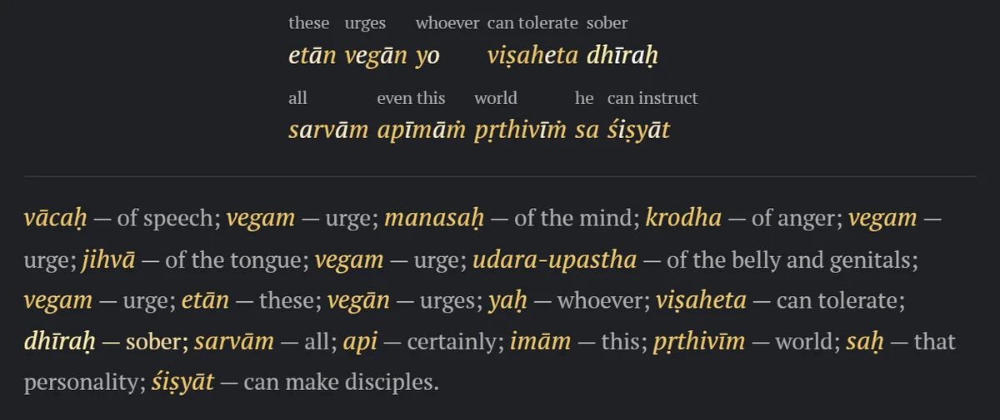
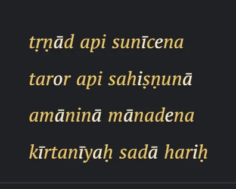
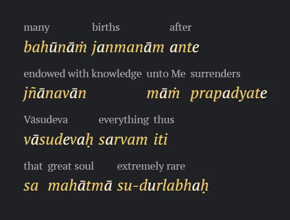
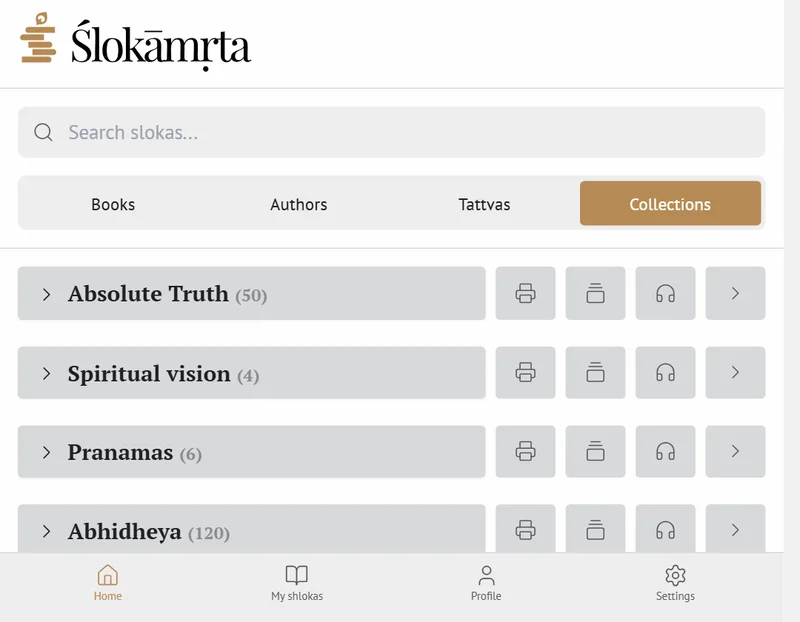
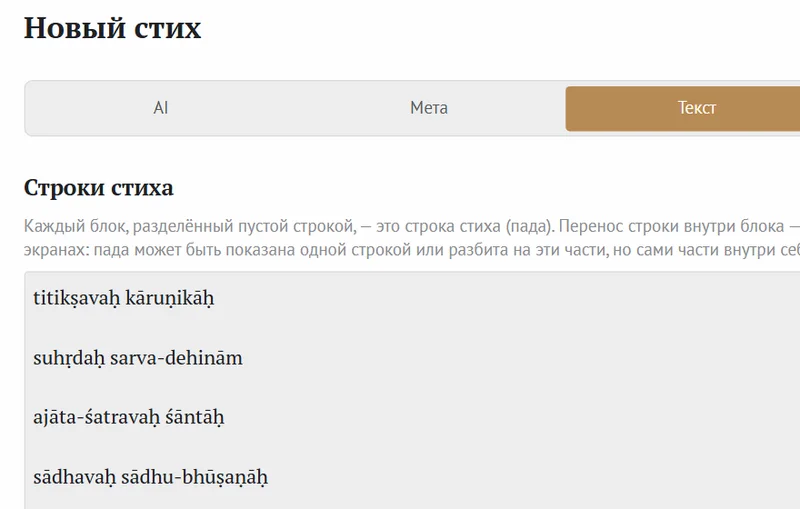
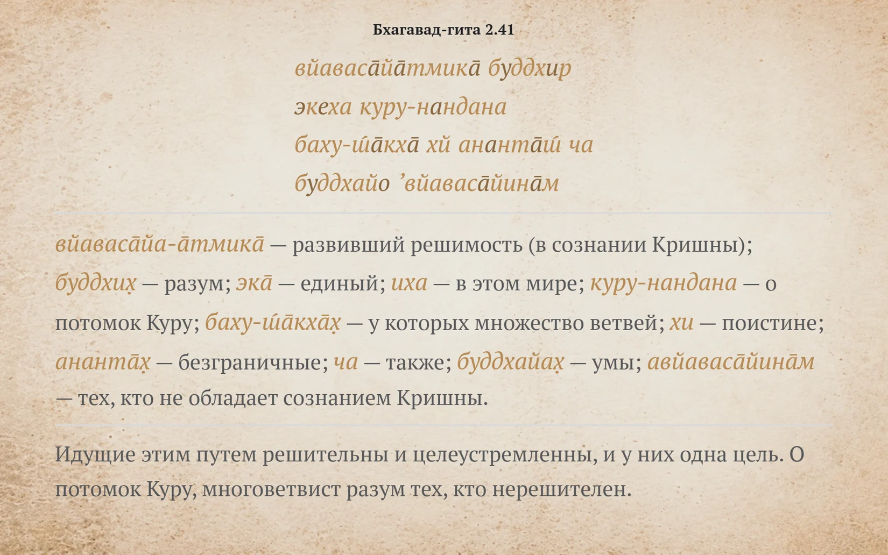

The kunja at the foot of Govardhan
The kunja at the foot of Govardhan
A SRI RUPA SEVA KUNJ PROJECT
Slokamrita
Verses to
return to
Choose a verse, listen to it in Sanskrit, and read it word by word. Learn it on your own or with other devotees.
- 302
- published verses
- 310
- recordings
- 62
- public collections
VERSE OF THE DAY
This is how a verse looks in Slokamrita
A working piece of the app. Switch translations on and off, hover over a Sanskrit word, play the recording or open the slide.
Bhagavad-gita 2.13
of the embodied beingdehino in this’smin just asyathā in the bodydehe
boyhoodkaumāraṁ youthyauvanaṁ old agejarā
similarlytathā attainment of another bodydehāntara‑prāptir
the wise persondhīras thereintatra notna is deludedmuhyati
Hover over a Sanskrit word to highlight its meaning in the word-by-word translation
The recording did not load. Listen on the verse page


Highlighted letters mark guru syllables: heavy syllables held longer
Open the verse in SlokamritaFEATURES
Everything you need to learn a verse
Every screenshot is taken in Slokamrita itself.


For webinars and classes
Word-by-word highlighting
Hover over a Sanskrit word and its meaning lights up in the word-by-word translation. Handy when explaining a verse in a webinar: everyone sees which word you mean.
Try it

Guru syllables
Heavy syllables are highlighted, so you can see the rhythm and chant more easily.
Take a look

Recordings
Recitations by devotees: listen to the verse and repeat after the reciter.
Listen

Interlinear translation
The meaning of each word right above the Sanskrit. Turn it off to test yourself.
Turn it onSlideshows
A verse on a projector or shared screen: Sanskrit, translations or both.
Open the slide

Shared collections
Verses by topic, from the Absolute Truth to praṇāmas, with printing, slides and audio for the whole collection.
All collections

Your own verses
Add verses from the shared sections to your collections or enter your own verse.
Learn more

AI assistance
If the verse is in Vedarama, AI brings it over and fills in the fields. You review the text before saving.
How it works
STUDY TOGETHER
Read with other devotees
In each group, devotees read verses together, listen to recitations, and discuss what the verses mean.
They derive great satisfaction and bliss from always enlightening one another and conversing about Me.
From Śrīla Prabhupāda’s translation
MY VERSES
Your own verses and collections
Preparing a meeting or a class? Gather the verses you need into your own collection.
Take a verse from the shared sections
Or enter your own: lines, interlinear and word-by-word translation, source.
Let AI do the routine
If the verse is in Vedarama, AI quickly brings the text over and fills in the fields. You review the result before saving.
Present the collection
Open it as a slideshow at a meeting, or review the verses in the app.



FOR LECTURES AND GROUP READING
Put the verse on screen
Open a slideshow from a book section and put it on a projector or shared screen. Keep only the Sanskrit for recitation, or turn on translations for study. Hover over a word and everyone sees its meaning.
FOR ANDROID AND IPHONE
Slokamrita on your phone
Open downloaded verses offline. Listen to recitations, repeat the Sanskrit, and revisit your collections.

ABOUT SLOKAMRITA
Read a verse.
Learn it. Come back to it.
Slokamrita helps you study and memorize verses from Vaiṣṇava scriptures. Find original texts, interlinear and word-by-word glosses, translations, recitations, and collections in one place.
More about the project

Sri Rupa Seva Kunj
Slokamrita is a digital project of the ashram, a center of study and service at the foot of Govardhan.
Sri Rupa Seva Kunj websiteREAD, SING, DISCOVER VRAJA
More from Sri Rupa Seva Kunj


YOUR FIRST STEP